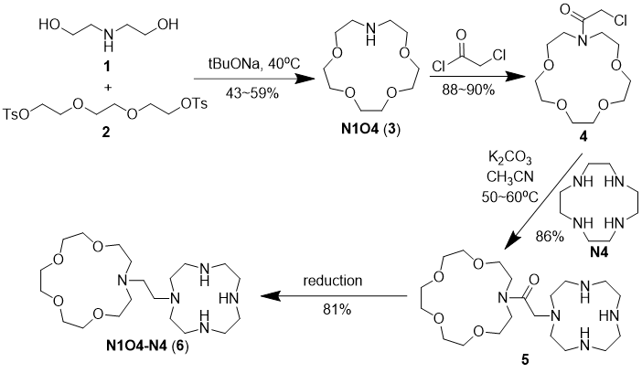
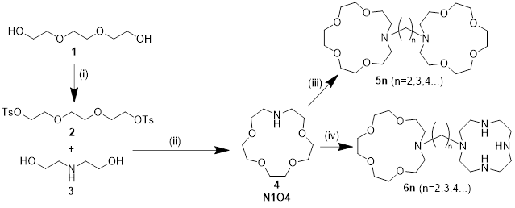

1998年，Jianzhuang Jiang报道了综述了一系列冠醚和穴醚类配体与Eu(II)配合物的发光性质，
其中Eu(II)与15c5以及aza12c4形成的1:3与1:2配合物体现出较高的PLQY。
该类冠醚亚铕配合物受热易失去一个或多个冠醚分子，热稳定性差，
因此本工作希望通过将冠醚分子之间共价连接以提升其热稳定性，便于升华法制备OLED器件。
本工作的目的是合成“双套索”结构的配体，并合成其亚铕配合物，测试其发光量子产率情况。
Synthesis route:

Synthesis of triethylene glycol ditosylate(2):
To a 250 mL three-neck bottle, tryethylene glycol(9.389 g, 62.52 mmol, 1 eq.),
tosylchloride(24.329 g, 127 mmol, 2.04 eq.) and dichloromethane(65 mL) was added.
The mixture was put into an ice bath and stirred until all solids were solved.
NaOH(20g, 0.50 mol, 8 eq.) was slowly added, while the mixture was maintained between 0-5℃.
After the addition was completed, the mixture was stirred for another 4 hours under room temperature.
Then, 65 mL dichloromethane and 75 mL water was added into the bottle.
The organic phase was seperated and washed by water(10 mL * 3),
dried over Na2SO4 and removed under reduced pressure to afford 2 as a white crystalline solid(26.925 g, 58.718 mmol, 94%).
Synthesis of aza-15-crown-5(4): To be finished...
To be finished....
To be finished....